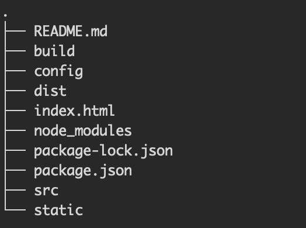

一 搭建环境
mac 安装node
brew install node 安装vue 全家桶
npm install -g vue-cli选择一个目录做初始化
vue init webpack mypro #中间有很多选项，根据推荐，全部选择y即可安装依赖
cd mypro
npm install 开启本地测试
npm run dev
打开浏览器，输入 http://localhost:8080,看到如下表示环境搭建成功：
开发完成后执行如下明白，构建发布包
npm run build
目录结构说明

build: 构建相关配置
dist: 发布包
config: 初始化项目的配置
src: 开发代码目录
package.json: 依赖文件
index.html: 首页
static :静态资源文件